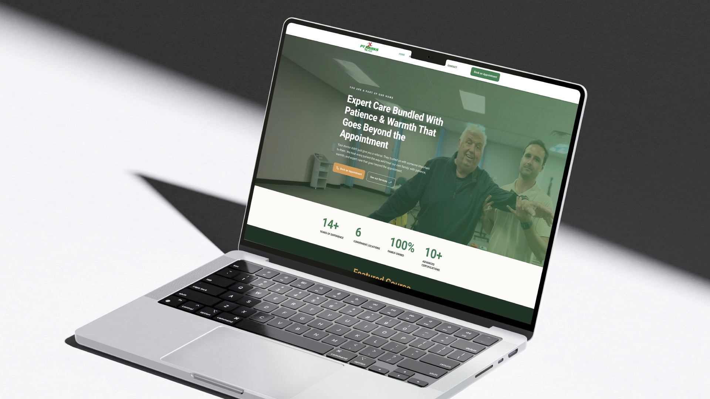
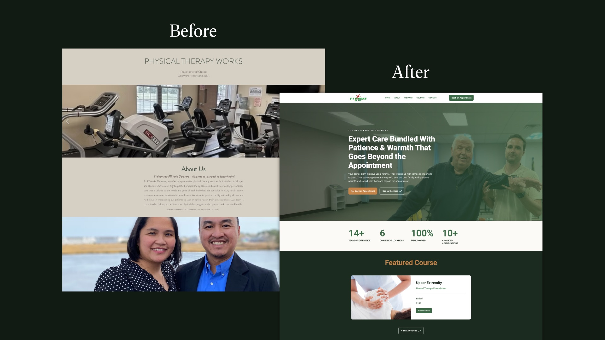
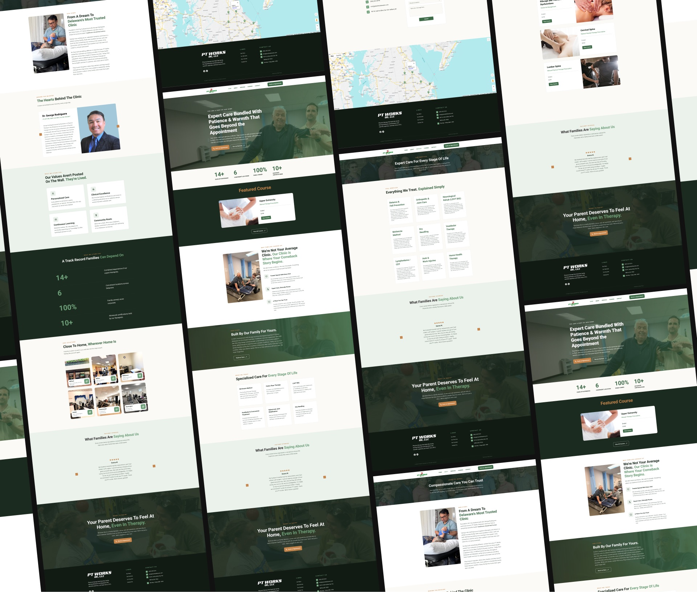

PT Works Delaware had been serving patients across Delaware and Maryland since 2012, but their website told a different story. The design felt dated and inactive, giving first-time visitors the impression that the clinic might no longer be operating at full capacity.
The stakes were high. Most of their patients are seniors referred by physicians, and it is rarely the patient who does the research. It is their adult children who search online, read between the lines of a website, and decide whether a clinic feels trustworthy enough to hand their parent’s recovery to. A website that looked neglected was quietly undermining a clinic with over a decade of real, proven care.
The goal was clear: build a digital presence that matched the warmth, expertise, and credibility PT Works had earned in person.
We started with the audience, not the aesthetics. The primary decision-maker was an adult child, likely in their 30s or 40s, doing a quick but meaningful background check on behalf of a parent. That meant the site needed to communicate trust and competence within the first few seconds, before a single word was read.
The redesign led with the clinic’s story: family-owned, community-rooted, built on personal care. We brought the founders forward visually and gave the copy a warm but confident tone that spoke directly to families, not just patients. Credentials, certifications, and specialized services were made visible and easy to find, addressing the unspoken question every adult child is really asking: are these people qualified to take care of someone I love?
We modernized the visual system while keeping the brand recognizable, pairing a clean layout with PT Works’ existing identity so long-time patients would still feel at home while new visitors felt immediately assured.
PT Works Delaware now has a website that reflects the standard of care they have always delivered. The redesigned site communicates credibility and warmth from the first scroll, giving families the confidence to move forward with an appointment rather than move on to the next result.
The clinic’s 14-plus years of experience, family ownership, and specialized services are no longer buried. They are the first thing a visitor sees.

